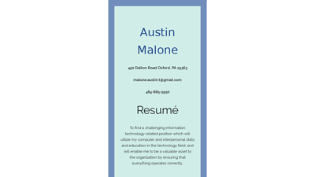
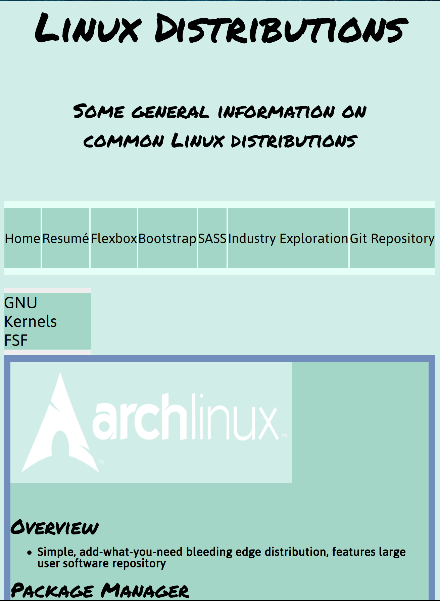

Course Projects:
35%
 

I found the Skeleton system interesting but a little confusing in the beginning. It is very extensive and has many more detailed options than media queries. The hard part about Skeleton was understanding how each of the columns work. It may be harder, but it can definitely make development move faster.
I really enjoyed working with Flexboxes. I feel as if tbey are easier to work with, and you can do many useful things with them like fitting things perfectly on a page. It is so far the simplest system we used so far in my opinion. A weakness could be there is more code involved that other systems and could cause trouble for some.
I really found that working with Sass is fun and easy. It reminds me of an actual programming language as opposed to just markup. It can make things easier because you can use variable and functions to fill in parts of code you re-use. The only downside is that it could confuse new web developers, but once you start to understand, the real purpose of it comes to light. I can't wait to use Sass for personal projects to save time and make modern sites.